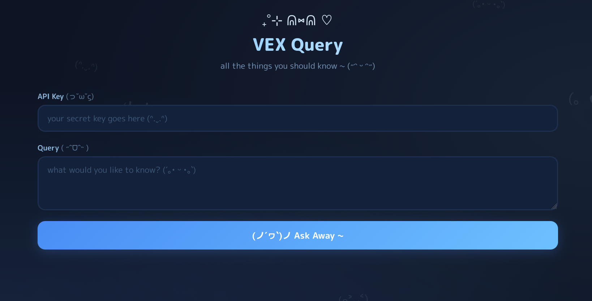
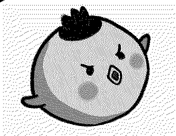
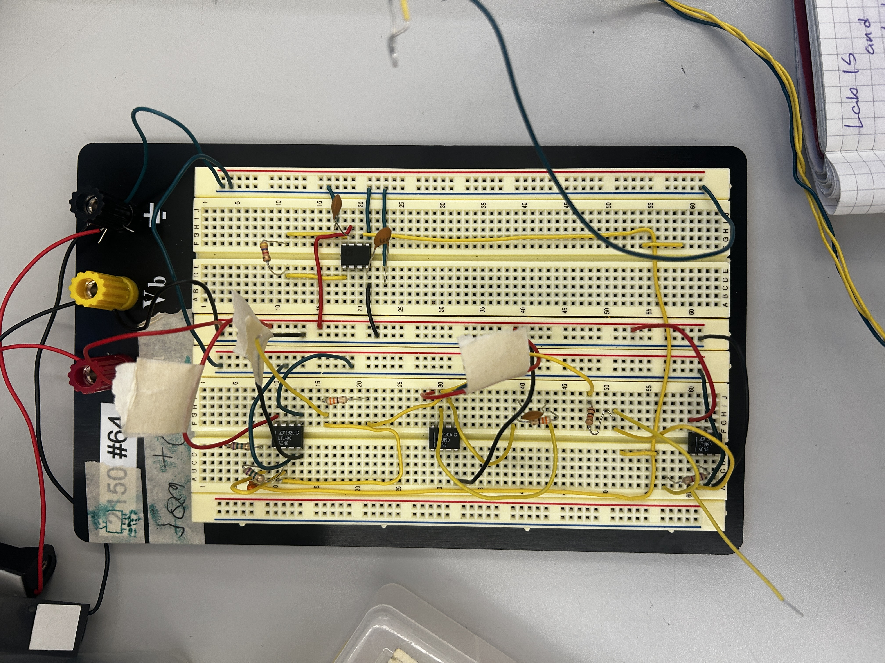

VEX
AI chatbot powered by your personal notes, enable smart, context-aware conversations.
Hi, I'm a current Computer Science and Computer Engineering student.
I enjoy all aspects of computing, from software development to
hardware design.
My goal is to gain hands on experience through projects, work
opportunities, and to contribute cutting edge solutions.

AI chatbot powered by your personal notes, enable smart, context-aware conversations.


Here are some of the skills and technologies I've worked with, along with relevant experience from projects, coursework, and professional work.
Python, C++ (17/20), Go, Rust, TypeScript, JavaScript, Java, Kotlin, C#
Gin Gonic, Actix Web, Drogon Web Framework — shipped 20+ AI-driven backend solutions professionally at Monk Group
Vector databases, RAG pipelines, chatbot APIs — including a personal vectorized notes system (VEX) built in Go
STM32CubeMX, Altium, Arduino, FPGA (Quartus Prime), LT-Spice, rTOS development in C++ for electric racing firmware
Docker, Podman, GitHub Actions, Gitea Actions, Git, Jira — experienced with CI/CD pipelines and containerized workflows
Communications Lead at NU Robotics, former Robotics Club President — led multi-team coordination and drove highest competition score in five years